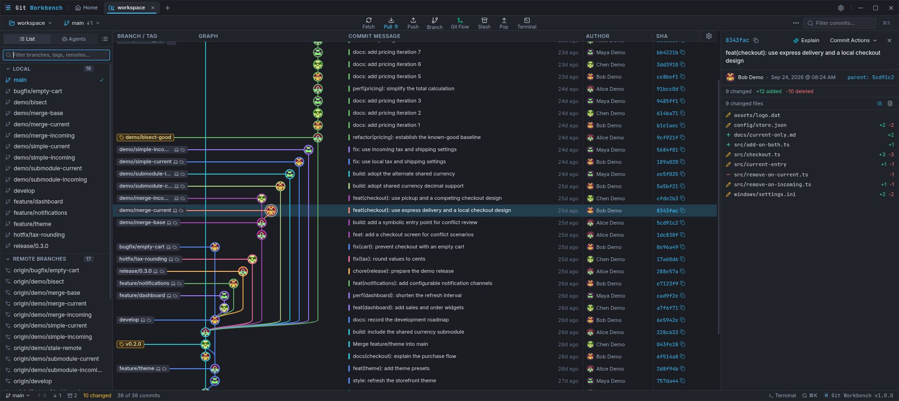
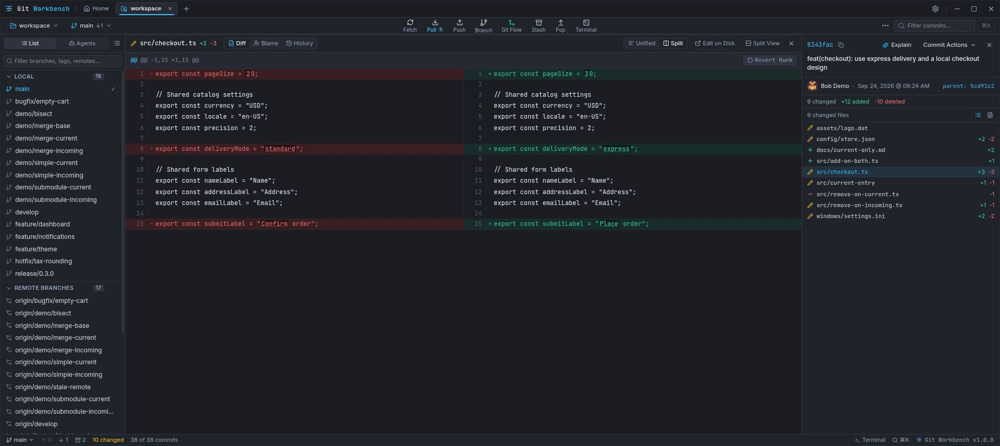
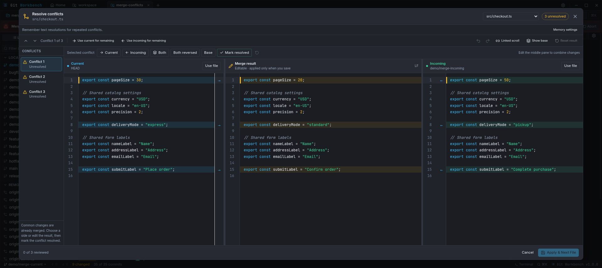

History you can follow
Trace branches, inspect commits, and choose the author, SHA, and date columns that matter to you.
Visual graph · Search · BlameOPEN SOURCE. AT HOME ON YOUR DESKTOP.
Follow every branch. Understand every change.
Bring your daily Git work into one focused workspace.
Free & open source · Linux, macOS & Windows

The whole story, connected. Follow branch lanes and inspect the details of any commit.
01 / 03
Commit with context. Review patches and build focused commits with file, hunk, and line staging.
02 / 03
Work through conflicts deliberately. Compare both versions, edit the result, then explicitly apply it.
03 / 03Actual application interface, captured in a browser preview with disposable demo repository data. Click any screenshot for full size.
FROM FIRST COMMIT TO FINAL REVIEW
Stay close to your code, see what Git is doing, and choose the next action with context.
Trace branches, inspect commits, and choose the author, SHA, and date columns that matter to you.
Visual graph · Search · BlameRead unified or split diffs. Stage individual files, hunks, or lines to keep each commit focused.
Split diffs · Partial stagingCompare Current and Incoming with an editable result. Review each block before applying your resolution.
Three-pane editor · Base viewConnect GitHub, GitLab, or Bitbucket to create requests, review changes, and inspect checks.
PRs & MRs · Reviews · ChecksUse restore points, reflog, interactive rebase, and rewrite comparisons to navigate local history.
Restore points · Rebase · ReflogMove between repositories, open parallel worktrees, and tune themes, typography, and shortcuts.
Worktrees · Command paletteA SHORT PATH TO YOUR NEXT COMMIT
Choose your platform below. Keep system Git installed for local repository operations.
Open an existing local project or initialize a new one. Your normal Git files and authentication stay in use.
Follow history, review the working tree, and stage your changes. The built-in guide explains each workflow.
YOUR WORKBENCH IS READY
Checking the latest public release…
Choose the package that fits.
Debian / Ubuntu, Fedora / RPM, Arch, or a portable AppImage.
Apple silicon & Intel.
Universal build
Download for macOSmacOS builds are unsigned. Installation and updates are manual; review the release instructions.
A familiar desktop installer.
Intel / AMD 64-bit
Download for WindowsInstall system Git before opening your first repository.
Yes. Git Workbench is open source under the MIT license. You can inspect the code, report issues, and contribute on GitHub.
Git Workbench uses your installed system Git and standard repositories. Pushes and pulls use your configured SSH keys or Git credential helper. Provider sign-in separately authorizes hosted pull request APIs.
GitHub, GitLab, and Bitbucket have dedicated pull and merge request integrations. Configure your provider in Settings → Pull Request Providers. Local Git operations do not require provider sign-in.
AI assistance is optional. Review your configured provider and the content you send before requesting a generated message or review. Local rule-based commit message drafts are also available.
Check About → Software updates for available releases. Supported Linux packages and Windows builds offer explicit download and install actions. Unsigned macOS builds always use manual downloads.
BUILT IN THE OPEN
Found a rough edge? Have an idea? Help shape what comes next.